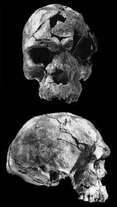

Cráneos de Herto (Homo sapiens idaltu)

Some new fossils from Herto in Ethiopia, are the oldest known modern human fossils, at 160,000 yrs. The discoverers have assigned them to a new subspecies, Homo sapiens idaltu, and say that they are anatomically and chronologically intermediate between older archaic humans and more recent fully modern humans. Their age and anatomy is cited as strong evidence for the emergence of modern humans from Africa, and against the multiregional theory which argues that modern humans evolved in many places around the world.Se encontraron tres cráneos:
- BOU-VP-16/1 es un cráneo adulto casi completo (mostrado a la derecha). Es grande y robusto, con una capacidad craneal estimada en 1450 centímetros cúbicos, mayor que la de la mayoría de los humanos modernos. El cráneo es largo y alto en vista lateral, y White et al. (2003) listan una serie de características en las que se encuentra cerca o más allá del límite de los humanos modernos (el ángulo occipital, la altura mastoidea y la anchura del paladar). Visto desde arriba, su longitud supera a cualquier muestra de más de 3000 humanos modernos, pero una medida de anchura está por debajo del promedio de los humanos modernos. La cresta supraorbitaria no es prominente y se encuentra dentro del rango de los humanos modernos.
- BOU-VP-16/2 consiste en partes de otro cráneo adulto que parece haber sido aún más grande que la muestra anterior.
- BOU-VP-16/5 consiste en la mayor parte de una calavera de un niño, probablemente de unos 6 o 7 años de edad según sus dientes.
"Debido a que los homínidos de Herto están morfológicamente justo más allá del rango de variación observado en AMHS (homo sapiens anatómicamente moderno Homo sapiens), y debido a que difieren de todos los demás homínidos fósiles conocidos, los reconocemos aquí como Homo sapiens idaltu, una nueva paleosubespecie de Homo sapiens".Stringer (2003), however, in a commentary article, suggests that the skulls may not be distinctive enough to warrant a new subspecies name.
Desde el punto de vista anatómico y cronológico, los cráneos de Herto parecen intermedios entre cráneos anteriores y más primitivos, como los de Bodo y Kabwe ('Homo rhodesiensis'), y los primeros cráneos completamente modernos, que se encuentran por primera vez desde hace aproximadamente 115.000 años.
La conclusión final de los autores es que "cuando se considera junto con la evidencia de otros sitios, esto muestra que la morfología humana moderna surgió en África mucho antes de que los neandertales desaparecieran de Eurasia". Debido a esto, estos hallazgos han sido generalmente vistos como un retroceso para el modelo multirregional de la evolución humana (que argumenta que los humanos modernos evolucionaron en áreas geográficamente extensas del mundo) y un fuerte apoyo para el modelo competitivo de Fuera de África (que argumenta que los humanos modernos evolucionaron en África y se dispersaron desde allí, desplazando a cualquier población preexistente).
Respuestas creacionistas
Answers in Genesis (AIG) argumenta, quite reasonably, that these fossils are so similar to modern humans that they don't constitute any problem for creationists - or, at least, to their own position. Reasons To Believe (RTB), an old-earth creationist ministry founded by Hugh Ross, ocupa la posición más sorprendente that these fossils are of soulless animals that merely look like humans, and has accused AIG of "factual errors and distortions", to which AIG ha respondido con energía. RTB's position seems untenable to me: it's hard to see how anyone can credibly claim that fossils so remarkably similar to modern humans are animals. RTB appears to have a strategy that by definition excludes any possibility of transitional fossils: if scientists put a fossil in anything other than Homo sapiens sapiens, it is "not a modern human" and hence is an animal (no matter how trivial the differences); if they hacer put it in H. sapiens sapiens, of course, it's also not evidence for human evolution. Heads I win, tails you lose.Referencias
Clark J.D., Beyene Y., WoldeGabriel G., Hart W., Renne P., Gilbert H. et al. (2003): Contextos estratigráficos, cronológicos y conductuales del Homo sapiens pleistoceno del Middle Awash, Etiopía. Nature, 423:747-52.
Stringer C.B. (2003): Fuera de Etiopía. Nature, 423:692-4.
White T.D., Asfaw B., DeGusta D., Gilbert H., Richards G.D., Suwa G. et al. (2003): Homo sapiens del Pleistoceno desde Middle Awash, Etiopía. Nature, 423:742-7.
Enlaces
Halladas las calaveras humanas más antiguas (Jonathan Amos, BBC)
Cráneos extraños de los humanos modernos más antiguos (Richard Stenger, CNN)
Esta página es parte del FAQ sobre homínidos fósiles en el Archivo talk.origins.
Página de inicio |
Especies |
Fósiles |
Creacionismo |
Lectura |
Referencias
Ilustraciones |
Novedades |
Comentarios |
Búsqueda |
Enlaces |
Ficción
http://www.talkorigins.org/faqs/homs/herto.html, 12/02/2014
Copyright © Jim Foley
|| Envíame un correo electrónico